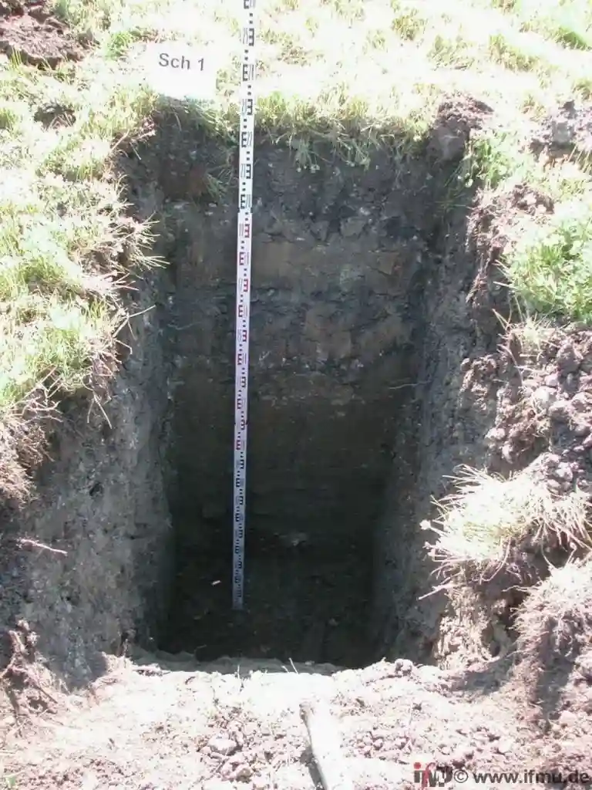

Der direkte Scherversuch nach DIN 18137 ist die Standardmethode zur Ermittlung der Scherparameter Kohäsion und Reibungswinkel. In Bottrop, wo das Stadtgebiet auf eiszeitlichen Terrassensedimenten des Rheins und der Emscher ruht, liefert dieser Versuch verlässliche Werte für die Tragfähigkeitsberechnung. Die quartären Kiese und Sande wechseln kleinräumig mit schluffigen Lagen – hier entscheidet die genaue Bestimmung der Scherfestigkeit über die Wirtschaftlichkeit der Gründung. Wir ergänzen den direkten Scherversuch gezielt durch einen Dilatometerversuch, wenn laterale Spannungszustände zu erwarten sind, oder durch eine Plattendruckprüfung zur Kalibrierung der Steifigkeit. So entsteht ein abgesichertes Bodenmodell für die Bebauung in Bottrop.

In Bottrops quartären Terrassensedimenten liefert der direkte Scherversuch zuverlässige Scherparameter – bei Sanden Reibungswinkel bis 35°, bei Tonen Kohäsionen unter 10 kN/m².
Methodik und Umfang
Lokale Besonderheiten
Bottrop liegt im Einflussbereich des Emschertals – Grundwasserstände nahe der Geländeoberkante sind in weiten Teilen der Altstadt und entlang der Boye keine Seltenheit. Bei hohen Wasserständen sinkt die effektive Spannung, der Reibungswinkel bleibt konstant, aber die Kohäsion nimmt ab. Ein direkter Scherversuch ohne Berücksichtigung der Porenwasserdrücke liefert dann zu optimistische Werte. Wir testen deshalb immer im dränierten Modus und simulieren die kritischen Wasserstände vor Ort. Das Risiko von Hangrutschungen oder Grundbrüchen in Bottrop wird so realitätsnah bewertet.
Benötigen Sie eine geotechnische Bewertung?
Antwort innerhalb von 24h.
E-Mail: kontakt@geotechnik.sbsErklärvideo
Geltende Normen
DIN 18137-1:2010 – Direkter Scherversuch, Grundlagen, DIN 18137-2:2011 – Direkter Scherversuch, Rahmenschergerät, Eurocode 7 (EN 1997-1:2004) – Geotechnische Bemessung, DIN 4020:2010 – Geotechnische Untersuchungen für bautechnische Zwecke
Zugehörige Fachleistungen
Standard-Scherversuch (DIN 18137-2)
Geeignet für Sande, Kiese und schluffige Böden. Vier Probestufen unter definierten Normalspannungen. Liefert Reibungswinkel und Kohäsion für Standsicherheitsnachweise.
Restscherfestigkeitsversuch
Für bereits vorbelastete oder geschichtete Böden in Bottrops Altlastenbereichen. Bestimmt den Scherwiderstand nach großen Verschiebungen – entscheidend für Böschungen und Baugruben.
Scherversuch an bindigen Böden
Fokus auf Tone und Schluffe der Emscherniederung. Dränierte Prüfung mit geringer Schergeschwindigkeit (0,02 mm/min). Ermittelt Kohäsion und effektiven Reibungswinkel unter realistischen Porenwasserdrücken.
Typische Parameter
Häufige Fragen
Wie viel kostet ein direkter Scherversuch in Bottrop?
Der Preis für einen direkten Scherversuch liegt in Bottrop zwischen 600 und 870 Euro pro Probenserie (3 bis 4 Stufen). Der genaue Betrag hängt von Probenanzahl, Aufbereitung und Dringlichkeit ab. Bei größeren Projekten mit mehreren Probenstaffeln geben wir einen Pauschalpreis.
Welche Bodenarten in Bottrop eignen sich besonders für den direkten Scherversuch?
Der Versuch eignet sich für alle Lockergesteine – besonders gut für die quartären Sande und Kiese im Süden Bottrops. Auch die weichen Tone der Emscherniederung lassen sich prüfen, erfordern aber eine langsame Schergeschwindigkeit, um Porenwasserüberdrücke zu vermeiden.
Muss ich vor dem direkten Scherversuch andere Untersuchungen durchführen?
Wir empfehlen eine vorherige Sondierung mit SPT oder eine Kalibrierung mittels Plattendruckversuch, um die Homogenität des Bodens zu prüfen und die Normalspannungen für den Scherversuch realitätsnah zu wählen.